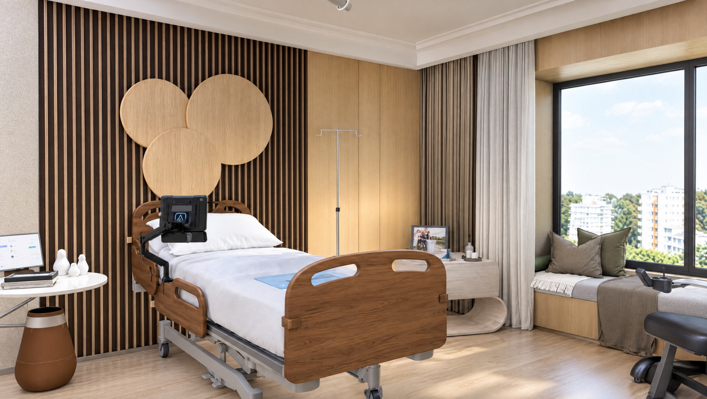
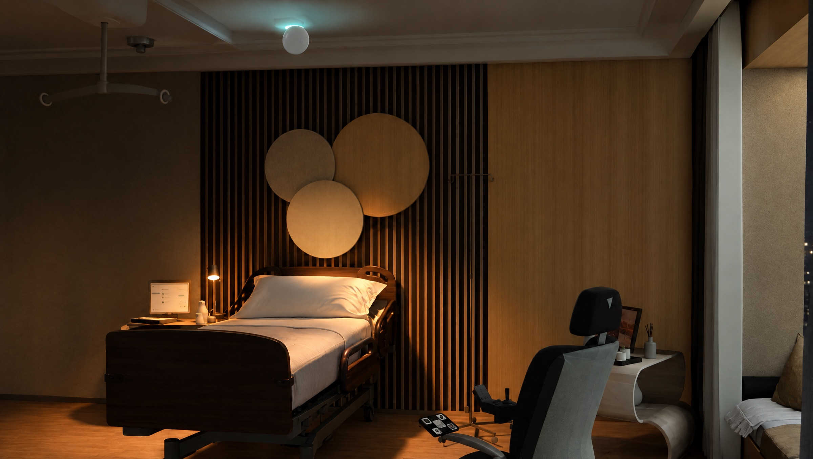
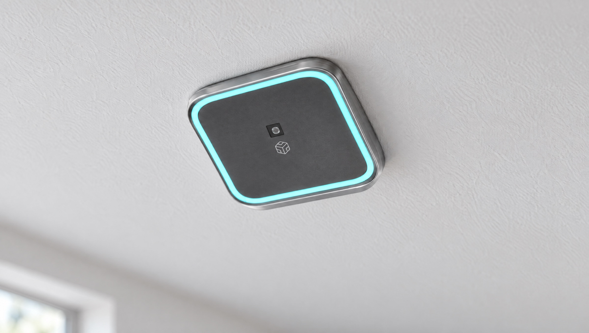

Care built into the room. It notices a fall, time out of bed and a racing heart, with no camera and nothing to wear.

Care built into the room. It notices a fall, time out of bed and a racing heart, with no camera and nothing to wear.
Every colour below was sampled from the three photoreal renders of the Ariel Care models. Teal is the sensor's own light, so it is the only accent.
#1A120B#4B3729#735F4F#987C61#C4AA8F#D0C2B4#F3F0EB#7BDBDEMade from the Ariel Care 3D models with Higgsfield. The rooms and the device are kept exactly as designed; only the old captions, interface overlays and the Ariel lettering were removed.
